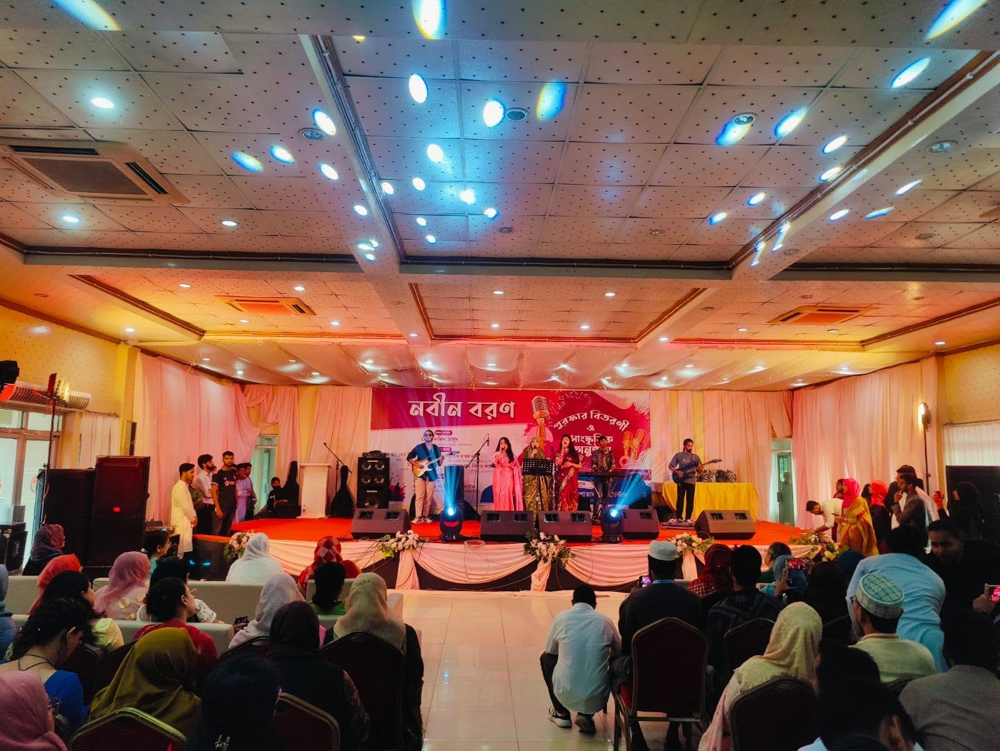

Education — Signature Project
Dreamweaver Events at the Freshers’ Reception & Cultural Program
A Freshers’ Reception and Cultural Program is more than just an event on the calendar. It represents the beginning of a new journey for students and an opportunity for an entire community to come together. It is a day filled with introductions, celebrations, performances, laughter, music, and memorable moments. For new students, it marks the first step into a new environment. For senior students, teachers, organizers, and guests, it is an opportunity to extend a warm welcome and celebrate the energy of a new generation.
Dreamweaver Events was proud to be a part of this vibrant Freshers’ Reception and Cultural Program, supporting the event with light and sound equipment to help create an engaging and enjoyable atmosphere for everyone present.
The event brought together a large audience, talented performers, respected guests, students, and organizers under one roof. From the formal segments of the program to the energetic cultural performances, the entire event reflected enthusiasm, creativity, and togetherness. Our role was to support the overall experience and help ensure that every important moment could be enjoyed by the audience.
This Signature Work reflects not only the event itself but also the importance of reliable event support in creating a smooth and memorable experience.
A Warm Welcome for New Beginnings
The central purpose of the event was to welcome new students and make them feel part of a larger community. Starting a new academic journey can be both exciting and unfamiliar, and a Freshers’ Reception provides the perfect opportunity to create a positive first impression.
The venue was filled with students and guests who came together to celebrate this special occasion. The atmosphere was warm and welcoming, with an audience eagerly waiting for the different segments of the program to begin.
As the event progressed, the venue gradually transformed from a formal gathering into a lively celebration. Students interacted with one another, enjoyed the performances, and became part of an experience designed to celebrate new beginnings.
For Dreamweaver Events, supporting such an occasion was particularly meaningful because events like these create memories that often remain with participants for years. A successful Freshers’ Reception is not simply about completing a program schedule. It is about creating an environment where people feel welcomed, included, entertained, and connected.
Bringing the Venue to Life
Every successful event begins with the right atmosphere. The venue for the Freshers’ Reception and Cultural Program was arranged to accommodate a large number of attendees while keeping the stage as the main focus of the celebration.
Rows of guests and students filled the hall as they waited for the program to unfold. The stage became the heart of the event, hosting speeches, presentations, music, dance, and other cultural performances.
Dreamweaver Events supported the program by providing the necessary light and sound equipment for the event. Our objective was to help create a comfortable and engaging environment where the audience could follow the program and enjoy the performances.
The right event atmosphere can make a significant difference. When guests can clearly experience what is happening on stage, the entire program becomes more engaging. Whether it is an important speech, a musical performance, or a lively dance segment, each moment deserves the attention of the audience.
Throughout the event, our support helped maintain an atmosphere suitable for both the formal and entertainment segments of the program.
The Formal Program and Special Moments
The Freshers’ Reception included important formal moments that set the tone for the celebration. Guests and speakers took the stage to address the audience and welcome the new students.
These moments are an essential part of any reception program. They provide an opportunity to share encouragement, inspiration, and important messages with those beginning a new chapter in their lives.
The podium became a focal point during the formal sessions as speakers addressed the audience. Students and guests listened attentively while the program moved forward according to the planned schedule.
For Dreamweaver Events, supporting these moments meant helping create an environment where the program could continue smoothly and where the audience could remain connected to the speakers and activities on stage.
While cultural programs often bring excitement and entertainment, the formal welcome remains equally important. It gives the event its purpose and reminds everyone why they have gathered together.
The combination of meaningful speeches and entertaining performances created a balanced experience for the audience.
A Stage Full of Talent and Energy
As the formal segments made way for the cultural program, the energy inside the venue continued to grow.
The stage welcomed a variety of performances, allowing students and participants to showcase their creativity and talent. Music and live performances brought the audience closer to the celebration, while performers created moments of excitement and enjoyment.
The cultural program was one of the most energetic parts of the event. Performers took the stage with confidence and enthusiasm, while the audience responded with attention and appreciation.
Live musical performances added a special dimension to the celebration. The combination of performers, instruments, vocals, and an enthusiastic audience created a lively atmosphere throughout the venue.
Dreamweaver Events was pleased to support these performances with light and sound equipment, helping create an environment suitable for the different activities taking place on stage.
Cultural performances are often among the most memorable parts of a Freshers’ Reception. They allow students to express themselves beyond the classroom and allow the audience to experience the creativity and diversity of their community.
From the first performance to the final moments of the program, the stage remained a center of attention and celebration.
Music That Connected the Audience
Music has a unique ability to bring people together. During the Freshers’ Reception and Cultural Program, musical performances became an important part of the overall experience.
The audience gathered around the stage area and enjoyed the energy of live performances. Musicians and singers contributed to an atmosphere that was both entertaining and engaging.
Some moments encouraged the audience to simply sit back and enjoy the music, while other performances created a more energetic response from those attending the program.
For an event with live performances, it is important that the overall environment supports both the performers and the audience. Dreamweaver Events provided light and sound support to help ensure that the musical segments became an enjoyable part of the program.
Our focus was not on adding unnecessary complexity but on supporting the event in a way that allowed the performers and organizers to focus on what mattered most—the experience of the audience.
The music created shared moments throughout the hall. People watched, listened, recorded performances on their phones, and enjoyed the celebration together.
These are the moments that give an event its personality.
Dance and Performance: Celebrating Creativity
The cultural program also featured energetic stage performances that brought a different level of excitement to the event.
Dance performances created some of the most visually engaging moments of the program. Performers confidently took the stage, expressing themselves through movement and entertaining the audience with their energy.
The crowd watched closely as each performance unfolded. Friends and fellow students stood near the stage and around the venue, cheering and supporting the performers.
For many participants, performing in front of such a large audience was a special experience. A cultural event provides a platform where students can demonstrate their talents and share their creativity with others.
Dreamweaver Events was proud to support the environment in which these moments took place. Our light and sound support contributed to the overall stage experience and helped maintain the atmosphere throughout the different performances.
The combination of music, movement, audience participation, and stage energy made the cultural program a memorable part of the Freshers’ Reception.
An Audience That Became Part of the Celebration
An event is not defined only by what happens on stage. The audience plays an equally important role in creating the overall experience.
Throughout the Freshers’ Reception and Cultural Program, the hall was filled with students and guests who actively participated in the atmosphere of the event.
Many attendees watched the performances with excitement, while others captured special moments on their mobile phones. Friends gathered together, supported performers, and enjoyed the program as a shared experience.
The large audience added energy to the venue. A performance becomes even more memorable when performers receive a positive response from the people watching them.
The event created a sense of togetherness, bringing people from different backgrounds and groups into one shared celebration.
For new students, this was an opportunity to see the spirit and creativity of their new community. For existing students, it was an opportunity to welcome newcomers and share their talents.
The audience was not simply watching the event—they were part of it.
Supporting the Event Behind the Scenes
While the audience experienced the final result, every successful event requires preparation and coordination behind the scenes.
Dreamweaver Events supported the Freshers’ Reception and Cultural Program with light and sound equipment as part of the event’s overall arrangements.
Our responsibility was to contribute to an environment where the program could take place comfortably and where different segments could move forward without unnecessary disruption.
An event with speeches, music, performances, and a large audience requires proper coordination between different teams. Organizers, performers, venue management, and event support teams all play an important role.
At Dreamweaver Events, we understand that event support is about more than simply providing equipment. It is about being part of the larger effort to create a successful experience.
Our team worked to support the program so that the organizers could focus on managing the event and the performers could focus on delivering their best performances.
The goal was straightforward: help the event run smoothly and contribute to an enjoyable experience for everyone attending.
From Formal Reception to Cultural Celebration
One of the most interesting aspects of this event was the transition between its different segments.
The Freshers’ Reception began with the purpose of welcoming new students and creating a formal environment for important messages and introductions.
As the program continued, the atmosphere became increasingly energetic through music and cultural performances.
This transition is what made the event particularly engaging. Guests were able to experience both the meaningful and entertaining sides of the celebration.
The formal reception created a sense of importance and purpose, while the cultural program brought creativity, energy, and enjoyment to the stage.
Dreamweaver Events was proud to provide support throughout these different moments. Whether the program involved an address from the stage or a lively performance, our focus remained on supporting the overall event experience.
A successful event should feel connected from beginning to end. Each segment should contribute to the larger story of t